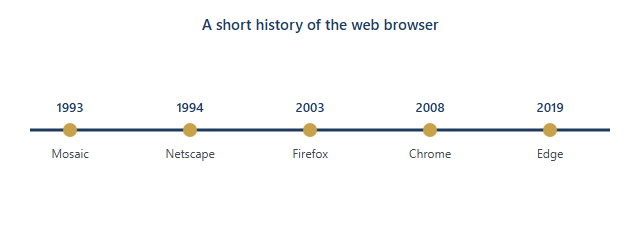

History & Evolution of the Web Browser
How the browser went from a simple page reader to the dominant platform of the modern web.
Origins (1989–1993)
Before browsers, people used plain-text tools to get information. The web itself was made by Sir Tim Berners-Lee in 1989, and his early browser was called WorldWideWeb.
The first popular graphical browser was Mosaic, made in 1993 at NCSA by Marc Andreessen and Eric Bina. Mosaic was a big step forward because it showed text and pictures together in a window, which made the web usable for normal people and not just programmers.
The Browser Wars (1994–1998)
In 1994 Marc Andreessen made Netscape Navigator, which took over the early web. Microsoft answered by putting Internet Explorer into Windows in 1995, and the “browser wars” started — the fight for who would be the default browser.
Microsoft used strong tactics, like bundling IE with Windows and pushing computer makers to install it, and they won. This later became a famous antitrust case, United States v. Microsoft (1998).
The IE Monopoly & the Rise of Rivals (2000s)
By the mid-2000s Internet Explorer (IE) had around 95% of the market. But the web was getting more complex, and IE started to fall behind the newer web standards (CSS, JavaScript and later HTML5).
Firefox came out in 2003 (by Mozilla) and was faster and more standards-friendly. Apple's Safari also came out in 2003, and Google's Chrome came out in 2008. Because developers started to care more about speed and standards, IE's share went down and the new browsers grew.
The Modern Era: Chrome (2008–2012)
Google Chrome came out in 2008 and it was the big success of that time. It had a fast JavaScript engine (V8) and a good multi-process design, and it updated very often (about every 6 weeks), so it was usually the most up-to-date browser.
By 2011–2012 Chrome had passed IE and became the most used browser in the world — a big change from the mid-2000s. Chrome still leads in the current browser market.
The Chromium Era (2013–present)
In 2013, Google split the WebKit engine into its own engine called Blink for Chrome. After that, Microsoft's Edge (which first came out in 2015 on its own EdgeHTML engine) switched to Chromium/Blink in 2019 and stopped using EdgeHTML.
Apple's Safari still uses WebKit and Mozilla's Firefox still uses Gecko, but most of the web's browsing today is on Chromium. This makes people worried about “engine consolidation” — having only a few engines can slow down new ideas. Firefox and Safari are the main separate choices left. Browsers that may seem to stand apart, like Opera and Brave, run on Chromium under the hood.
